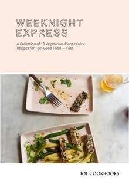

Welcome! 101 Cookbooks is a California food blog by Heidi Swanson, focused on healthy recipes for everyday. It features over 700 vegetarian recipes, whole foods recipes, and vegan recipes, plus the occasional sweet treat.
MOST RECENT

WEEKNIGHT EXPRESS features 10 Vegetarian, Plant-centric Recipes for Feel-Good Food — Fast!
Subscribe to get 32-pages of recipes to view on your tablet, e-book reader or phone.
